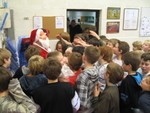

Innlegg
2007. Juleseminar

Det hele startet opp lørdag mellom 15.00-16.00. Da kunne de foresatte levere de håpefulle og det ble ordnet med registrering og betaling for deltagelsen. Alle måtte oppbevare sine eiendeler i det ene kampsport rommet frem til etter trening. Totalt så deltok det 68 stykker på jule avslutningen. Da kommer oss noe større i tilleg.
Vi startet opp med en felles trening. Hele 50 stykker deltok på den treningen. Vi delte oss så opp i to grupper og de videregående fikk trent på mønstre som vi ikke så ofte får tid til å trene på ellers. Samt at vi fikk jobbet litt men noen teknikker som vi alltid kan bli flinkere på.
Treningen vell overstått. Liten pause og det ble en oppvisning. Kim hadde regien på dette med Geir som støttespiller. Oppvisningen ble godt motatt og jeg håper at kansje noen av de som deltok på oppvisningen har lyst til å bli med på noe slikt igjen. Camilla, Anders og Anny viste en poomse som de også viste frem på vinterleiren. Tom knuste planker og Anders og Jostein hadde en knuse sekvens med planker som de høstet stor applaus for på vinterleiren. Noen flere var også med på oppvisningen og gjorde også en flott innsats. Morro å se på.
Etter oppvisningen ble det litt pause før det var pizza og brus til alle. Hele 26 pizza ble konsumert på rekord tid. Vi hadde bestilt rikelig med pizza så det var mat til alle og vell så det. Maten smakte og noe senere så skulle det være film fremvisning i TKD rommet oppe i 2 etasje. Men rett før filmen startet så kom TKD nissen på besøk. Han kom med godte poser til alle sammen. Motagelsen ble mer en han hadde håpet på og han fikk nesten brukt for selvforsvar der det var mange som kansje hadde lyst på en ekstra godte pose. Det hjalp heller ikke at han ble avslørt etter ca 5 sekunder og hadde nettopp vært i brytekamp men noen av de små. Autoriteten var nokk ikke helt tilstede. Men moro var det.
Filmen startet og mange synes det var moro å se en jackie chan film. Et par sener var kansje litt tøffe for noen, men filmen var morsom. Noen var litt tørste og sultne igjen etterpå og klarte å spise enda litt mere pizza før de måtte gå å pusse tenner og gjøre seg klar for natta.
Enkelte ville sove fra kl 23.00. Andre ville ikke sove i det hele tatt. I følge nattevakten så var det ikke 100 % stille før nærmere 03.00. Så det var en ganske trøtt gjeng som sto opp kl 08.00 med hjelp av litt musikk. Frokost ble spist og så var det en felles trening i 1,5 time. Plutselig så var hele juleavslutningen over.
Stor takk til de foreldrene som var med og hjalp til. Uten deres hjelp som nattevakter, og hjelp til mat og drikke m.v så hadde vi ikke fått dette til. Vi skal sammen evaluere dette i etterkant og se hva vi kan gjøre enda bedre til neste år. Da vi tror at dette var en sukse og må gjentas. Kansje med enda mere på programmet.
har du noen tanker eller tips om hva vi kan gjøre anerledes til neste år? Eller var det noe du syntes var bra? Et eller annet som var skikkelig dårlig? Så send oss en melding så tar vi det med i vår evaluering.
Vi takker for en hyggelig avslutning sammen med dere.